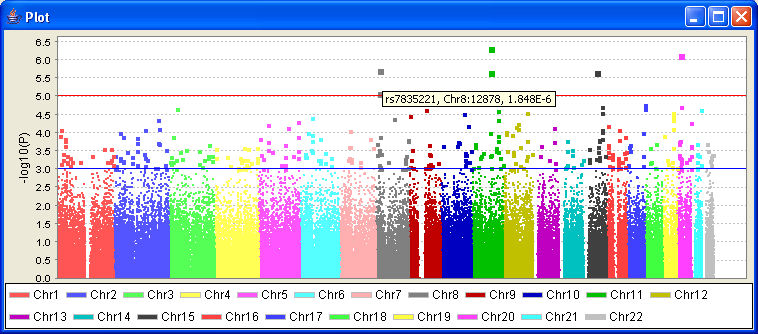

|  |
HaploviewClicking on Plot from the previous panel give a visualisation of the current results. Hovering the mouse over a point will indicate what that SNP is, its position and p-value. Clicking on that the point will return you to that SNP in the previous table.Previous | Next |